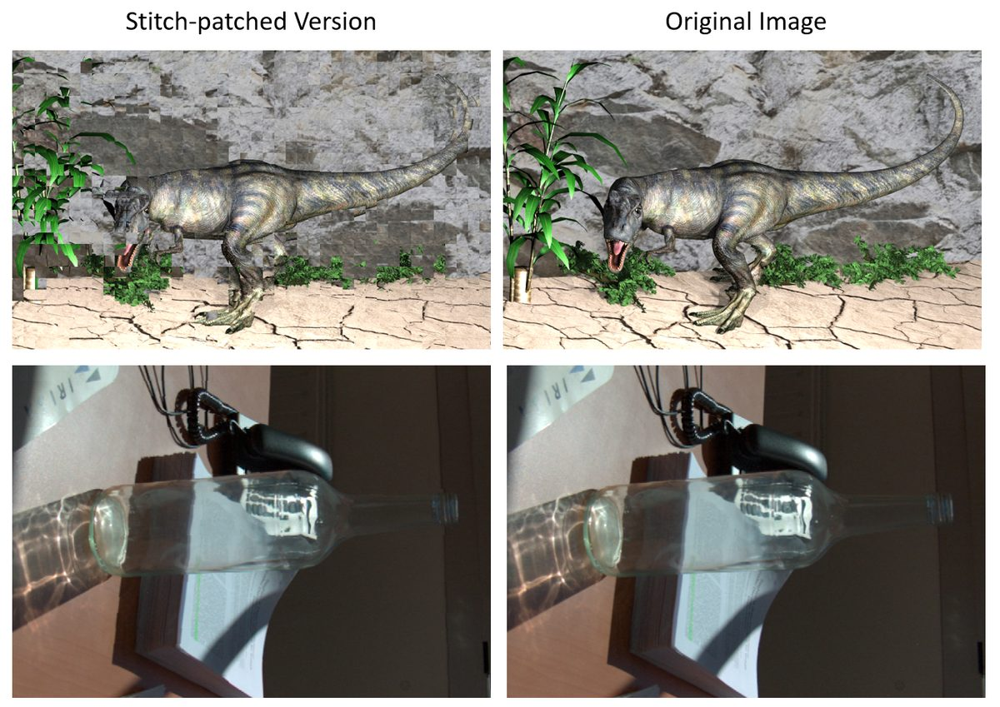
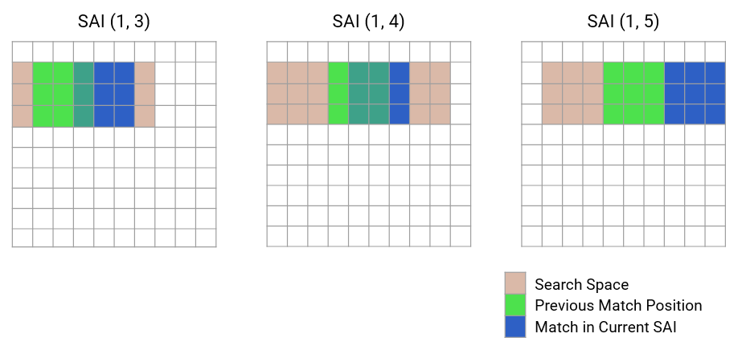
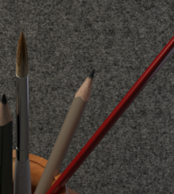
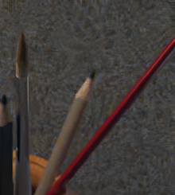

Light Field Denoising & LF-PatchMatch
A novel learning-based light-field denoiser that exploits the redundancy between views — powered by a fast, hand-optimised C++ PatchMatch core. The work behind my SPIE 2023 paper.
Background
A light field captures a scene as a grid of slightly-shifted views (sub-aperture images, or SAIs) — the same scene seen from many nearby viewpoints. That redundancy is exactly what standard image denoisers throw away. The goal of this project was to build a denoiser that uses the neighbouring views to clean up each one, and to benchmark it rigorously against the best classical and learning-based methods.
I first assembled a large, diverse dataset — 492 scenes / 28,604 images from seven public light-field archives — and a noise generator supporting both additive white Gaussian noise and a realistic Poissonian–Gaussian smartphone-sensor model.
The core idea: stitch-patched views
Naively stacking neighbouring SAIs fails because of parallax — objects shift between views, so a CNN's small receptive field can't line them up. Instead, for each view I build several "stitch-patched" versions: reconstructions of the target view assembled from the most-similar patches found in the other views. These are locally aligned to the target, so a DnCNN-style network can finally exploit cross-view redundancy. This became LFDnPatch.

LF-PatchMatch: making it fast in C++
Patch matching across a full SAI grid is brutally expensive — a naïve search is O(H²·W²·GH²·GW²). I implemented the matcher in C++ and exploited the geometry of the light-field grid to cut that down dramatically:
- 1-D disparity search — views in the same row differ only horizontally (and columns only vertically), so the 2-D search collapses to 1-D.
- Sliding search window — since disparity between neighbours is small, only a narrow region around the previous match needs checking.
Together these reduce the complexity to O(GH·GW·H·W·S·(GH+GW)) — a speedup that grows with scene size and made training on the full dataset feasible.

Benchmark
All methods were evaluated with PSNR and SSIM across noise types and strengths. Aggregated PSNR under additive white Gaussian noise:
| Method | Soft (σ=6) | Medium (σ=15) | Hard (σ=23) |
|---|---|---|---|
| Wavelets | 35.4 | 31.6 | 29.8 |
| BM3D | 40.4 | 35.6 | 33.4 |
| LFBM5D (light-field) | 41.0 | 36.6 | 34.2 |
| DnCNN | 39.2 | 35.4 | 33.4 |
| LFDnPatch (ours) | 37.9 | 34.3 | 32.5 |
PSNR in dB, averaged over the test scenes. The light-field-aware LFBM5D wins overall, confirming that cross-view redundancy is real and exploitable.


Takeaways
- Light-field-specific methods clearly beat their single-image counterparts — except under wide angular spacing, where occlusions break cross-view redundancy.
- LFDnPatch, though below DnCNN, consistently beat wavelets and sometimes BM3D — a promising first learning-based light-field denoiser with clear paths to improve.
- The work was published as Towards Learning-Based Denoising of Light Fields at SPIE 2023.
Stack & methods
Supervised by Michela Testolina and Prof. Touradj Ebrahimi (EPFL MMSPG). Model trained on 2 GPUs over ~4 days.